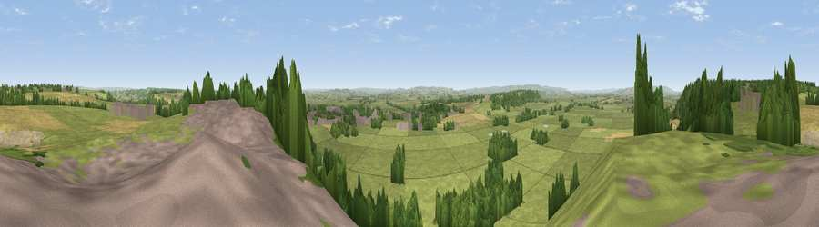

Viewpoint near Langport
#12281 in England · top 33% of its area beats it · near LangportThe view, rendered

A 360° render of this exact spot computed from the terrain model, tree cover and land cover — summer colours, afternoon light, calibrated against photographs of famous viewpoints. Real trees, hedges and buildings will differ in detail.
The panorama
Grey silhouette: terrain skyline in each direction (720 bearings, Earth curvature and refraction included). Dashed green: skyline with trees (+15 m) and buildings (+8 m) as obstacles. Blue strip: how far the ground is visible on each bearing.
Where the view opens
Wedge length = distance to the farthest visible ground on that bearing (vegetation-aware). Rings at 10, 25 and 50 km.
What fills the view
68% grassland · 14% woodland · 11% cropland · 5% built-up ·
Angular shares of the visible panorama (visual magnitude), not map area. Landscape diversity 0.43 (0–1 Shannon).
Key numbers
More beautiful places nearby
The staircase of upgrades: each row has a higher view potential than everything closer. Driving times are estimates from straight-line distance, calibrated against real road routing — check an actual route before setting out.
| Place | Direction | Drive | Score |
|---|---|---|---|
| Viewpoint near Aller | NW · 2 km | ~5 min | 61.8 |
| Viewpoint near Aller | NNW · 2 km | ~6 min | 64.2 |
| Lollover Hill | NE · 7 km | ~14 min | 66.4 |
| Burrow Hill | S · 8 km | ~17 min | 67.2 |
| Socombe Hill | NNW · 10 km | ~20 min | 76.4 |
| Viewpoint near Hewish | S · 18 km | ~32 min | 78.5 |
| Cothelstone Hill | W · 23 km | ~38 min | 82.1 |
| Viewpoint near West Bagborough | WNW · 25 km | ~40 min | 84.3 |
51.05264, -2.83421 · source: screening · position refined by local search. Computed location — check access rights before visiting.